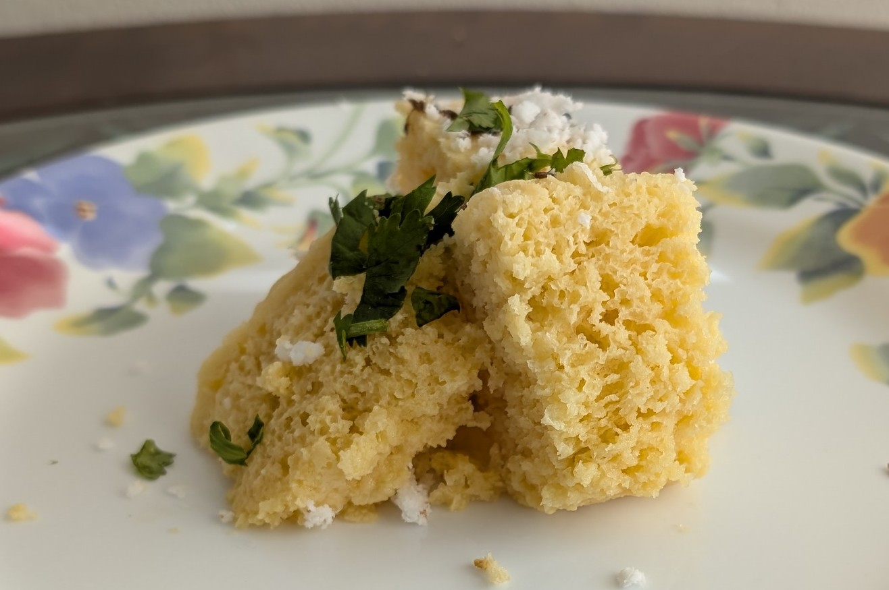

Dhokla
Prep Time: 10 mins
Cook Time: 20 mins
In western culture, we have cornbread and other delightful sides. In india, we have a lentil cake called dhokla, made from chickpea flour! If you are in a rush, I strongly recommend using a dhokla mix, which you can purchase from your local Indian Grocery store.
Tools
- Steamer set
- Sieve
- 6 inch round cake pan or a steamer safe container (round pyrex work)
- Recommended: Chitale Dhokla Mix
Ingredients
- 200 grams Chitale Dhokla Mix
- 200 mL of water, or a little less than 1 cup
- 1 1/2 Tbsp of oil
- 1/2 tsp mustard seends
- 1/2 tsp cumin seeds (Jeera)
- Garnish
- 1 Tbsp shredded coconut
- 1 Tbsp oil
- 1 green chilli pepper diced without inner seeds and membranes
- 2 stalks of cilantro, finely chopped
- 1/8 tsp or 2 squeezes of asafoetida or hing
- Making from Scratch ingredients
- 1 cup besan (gram flour)
- 1 Tbsp semolina or suji rava
- 1/4 tsp turmeric
- 1 tsp granulated sugar
- 1/3 tsp salt
- 1/2 Tbsp ginger paste
- 1 Tbsp lemon juice or 1/3 tsp of citric acid
- 1/2 cup of water (can change based on consistency of batter)
- 3/4 tsp of Eno or baking powder
Instructions
Using the Dhokla Mix:
- Get your steamer ready and steaming, and grease the cake pan.
- Sieve the mix into a mixing bowl so there are no lumps.
- Ready to Steam: When you are ready to steam,
add the water to the mix and fold the batter until fully incorporated.
Like a cake, try not to overmix.
- Pour the batter into your steamer safe dish, and steam for 15 mins
- Meanwhile: Heat your oil in a pan over medium heat, and
then add the spices until they start popping. Then add the chilli, and cilantro
stems.
- Pull this mixture off heat, and then once cool add a Tbsp of water and mix
around. Once the dhokla has finished on the steamer, pour this mixture over
the cake and add your garnish.
Making from Scratch:
- In a small bowl, mix together 1/2 cup of water, sugar, salt,
ginger paste, and lemon juice. Set aside for later use.
- Sieve the besan or gram flour and semolina flour into a large mixing bowl.
- Add the turmeric and mix well.
- Ready to Steam: Make sure your steamer setup is steaming
before proceeding. Then, pour in the spiced water that you made earlier (step 7)
and mix well until the dry ingredients are fully incorporated into the wet
ingredients. Note: the batter should be as thick as cake batter. Try pouring a figure
eight of the batter as a test.
- Once ready, follow steps 4-6. Then serve!
Enjoy this snack with a delicious cup of chai or coffee.